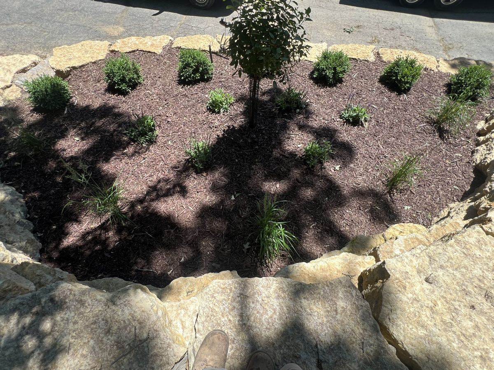

September 12, 2026 · New View Landscaping
Fall cleanup is one of those jobs where doing more isn't always better. Some of what gets cut, pulled and bagged in September would have been better left alone, and some of what gets skipped is what causes problems in spring.
Start with weeds. Pulling them before they go to seed is worth the time, because one season of seed heads turns into several seasons of weeding. Get the roots on perennial weeds, since cutting them off at the surface just resets the clock.
For perennials, the answer depends on the plant. Anything that got mildew, black spot or other disease this summer should be cut back and the debris removed, not left in the bed or tossed in a compost pile where the problem can carry over. Healthy perennials can be cut back now or left standing through winter. Plenty of people leave seed heads and stems up for the birds and for winter interest, and then cut everything back in early spring.
Shrubs mostly don't need much right now. Heavy pruning in fall can push new growth that gets killed by the first hard freeze, so save major cuts for late winter or early spring, and stick to removing anything dead, broken or rubbing in the meantime.
Mulch is where timing matters. A fresh layer of two to three inches goes a long way toward insulating roots through the freeze-thaw swings we get in Dubuque, and it keeps weeds down going into spring. The part people get wrong is piling it against trunks and stems. Mulch should be pulled back a few inches from the base of every tree and shrub, not stacked up in a cone around it, which holds moisture against the bark and invites rot and pests.
Finally, take a look at the edges. A bed line that has crept into the lawn or collapsed over the summer is easier to recut now than in spring, and it means the beds are ready to go when the weather turns. If a bed looks tired no matter how much cleanup it gets, that's usually a sign it needs a redesign, not more mulch.
Clean bed lines, fresh mulch or rock, and edging that actually holds its shape.
Learn MoreNot a matter of one being better than the other. Mulch and rock solve different problems, and picking wrong means redoing the bed sooner than you should have to.
Everyone thinks spring is planting season. For trees and shrubs in our climate, fall usually gives better results, and the window is shorter than people expect.
Most people have never gone through a full landscape project before and don't know what to expect. Here's the actual sequence, from the first walk-through to the last plant going in the ground.